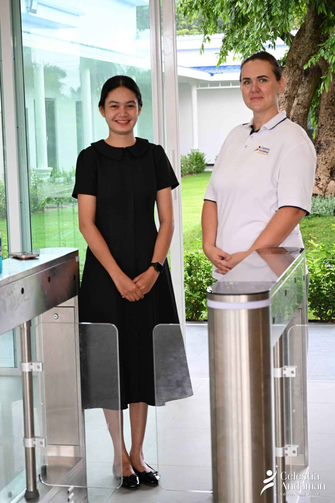

Explore fit
Share a little about your child.
Age or date of birth, current school experience, preferred start date, language background and what your family values in a school.
Admissions
Tell us your child’s age, where your family is now and what matters most. Admissions can help you understand the right stage and the next useful step.

A simple pathway
Explore fit
Age or date of birth, current school experience, preferred start date, language background and what your family values in a school.
Meet the school
See the environment, meet the people and ask how the programme works for your child’s stage. Families relocating to Phuket can begin with an online conversation.
Confirm placement
Admissions confirms the suitable class, current place availability, schedule, tuition and any observation or documentation needed.
Apply & prepare
Submit the school’s official application and documents, then receive practical information for your child’s first day and settling-in period.
This is the proposed parent-friendly flow. The school must approve the official application, developmental observation, required documents, fees, payment and refund terms before production.
Prepare for the first conversation
Date of birth, current year/class, languages used at home and any learning or support information you would like the school to understand.
Preferred start date, whether you already live in Phuket and your approximate residential area.
Your questions about curriculum, daily routine, relationships, outdoor learning, wellbeing and transition to the next stage.
School hours, meals, transport, fees, calendar, uniforms and parent communication.
For relocating families
A clear digital pathway matters when a family is comparing areas, schools and daily travel from another city or country.
Request an online conversationTell Admissions your child’s age and expected move date.
Receive the confirmed curriculum, schedule and availability information.
Speak with the school and see approved campus/classroom media.
Arrange an on-campus meeting when you are in Phuket.
Frequently asked by families
The current school website presents a British curriculum pathway for ages 2–7: Pre-Nursery, Nursery and Reception within EYFS, followed by Year 1 and Year 2 within Key Stage 1. Admissions should confirm exact age cut-offs and availability.
The production admissions journey should offer an online conversation for relocating families. The exact booking channel and response time are still to be approved.
CAIS is in Thep Krasatti, Thalang, in northern Phuket. The final production map pin and complete formatted address require school confirmation.
Not yet. Fees, inclusions, payment plans and refund terms should be added only from the school’s current approved fee sheet.
Start with the curriculum and school-life pages, then arrange a visit. A real school day, teacher interaction and the atmosphere around children provide evidence that copy alone cannot.
The school must provide its official checklist. Common international-school documents may include identification, prior school information and health records, but this prototype does not present an unapproved list as a requirement.
Ready for the next step?
You do not need to complete an application before you understand whether CAIS fits your child and family.